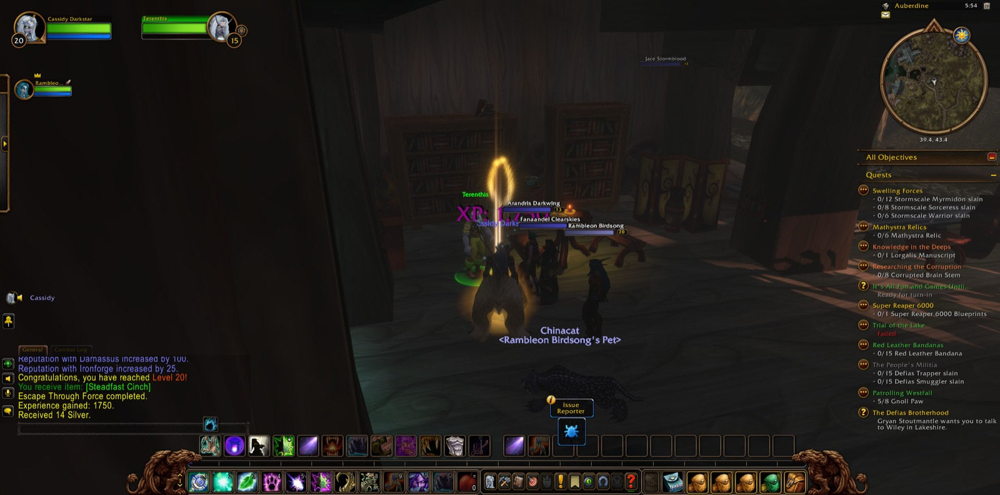
Cassidy Darkstar set out from Darnassus and passed through The Temple Gardens. There he was joined by Rambleon, a hunter, who stayed at his side for the rest of that journey, the longest fellowship of the night. Together they went down to Rut'theran Village and over The Veiled Sea to Darkshore, and Cassidy took a picture as each new land opened before him. They passed Mist's Edge and Auberdine, The Long Wash and Twilight Shore, then went south to The Zoram Strand and into Ashenvale. They saw Lake Falathim and The Shrine of Aessina, Astranaar and Maestra's Post. Then they turned north again to the shores of Darkshore and came once more to Auberdine.
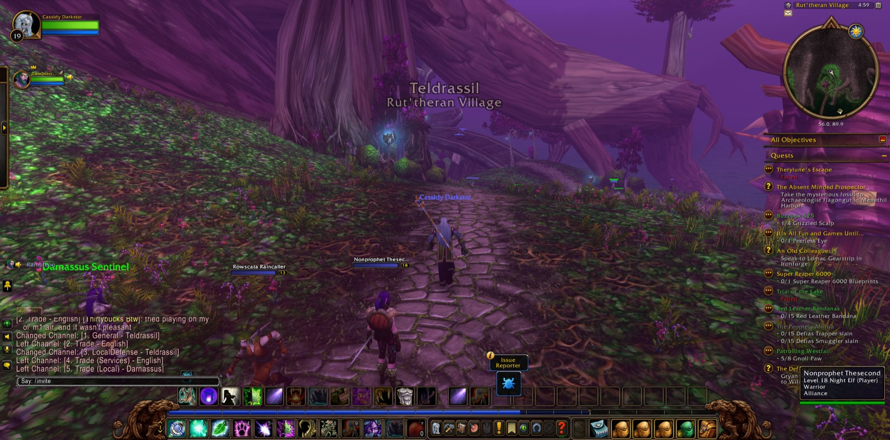
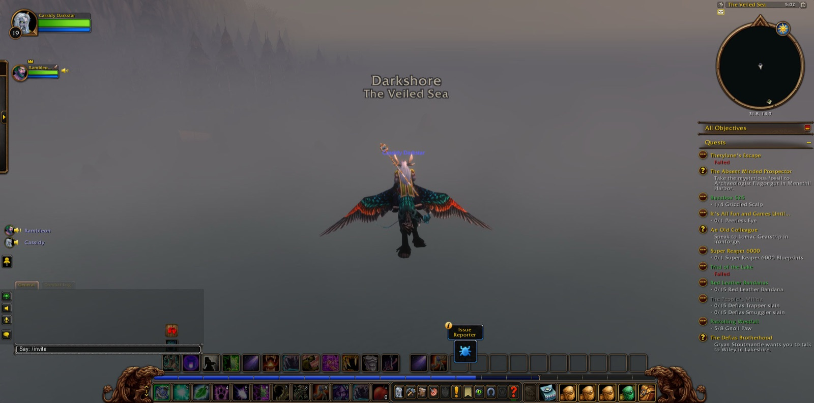
From Auberdine his errands led him south into Twilight Vale. There he slew Grizzled Thistle Bears and a Giant Foreststrider and a Moonstalker Sire. With four grizzled scalps taken, the task called Buzzbox 525 was done. He went on to Blackwood Den, where warriors, shamans and many Blackwood Ursa fell before him. There other travellers joined him for a while. Andria, a hunter, walked with him longest among them. Fanaandel, a druid of his own calling, stayed only briefly, and Koiya, another druid, came and went more than once. At the den Cassidy finished "A Lost Master" and took up "Escape Through Force."
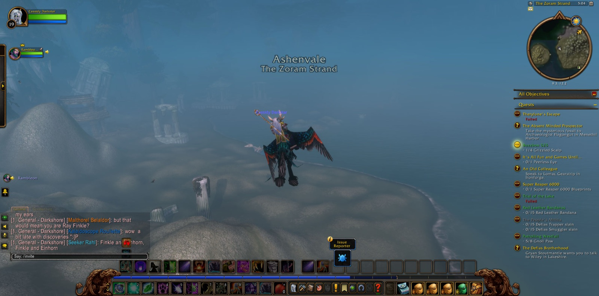
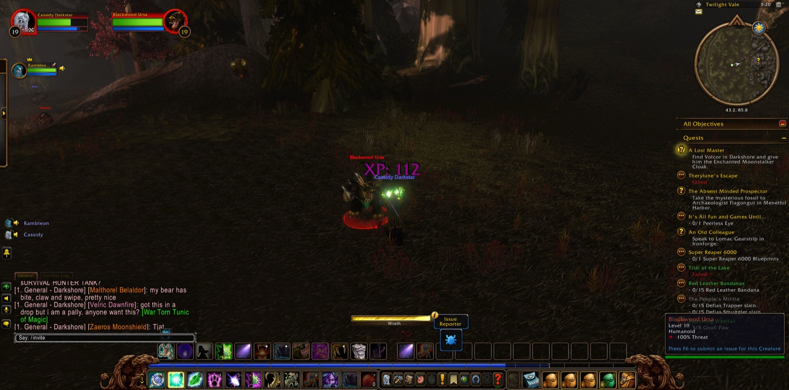
The heaviest labour of the night came at The Master's Glaive. Twilight Disciples and Twilight Thugs held that place, and many of them fell before Cassidy was done. There he recovered the Peerless Eye for "It's All Fun and Games Until...," and took many pictures of the place. Andria left him there, and Artemisa, a hunter, joined him for a short while and then went her own way. Of all the foes he met that night, forty-nine gave him experience.
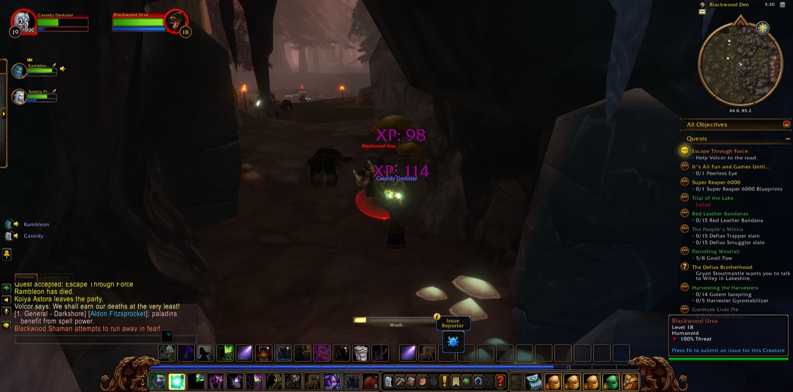
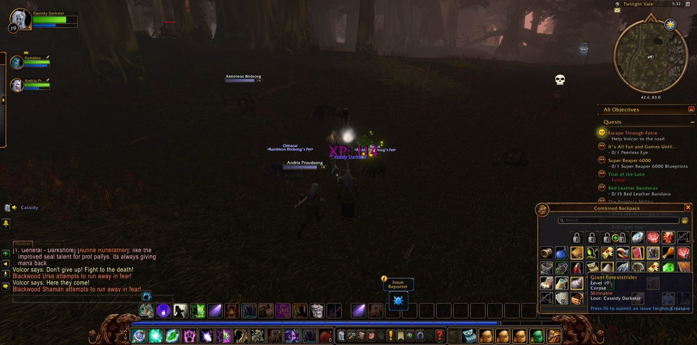
He went back north by Wildbend River to Auberdine, and there he came into his twentieth year of strength. He took a picture to mark it. In that same place he reported that "Escape Through Force" and "It's All Fun and Games Until..." were done. He then accepted a new errand, "The Powers Below": to carry the book of that name to Gerrig Bonegrip in the Forlorn Cavern of Ironforge.
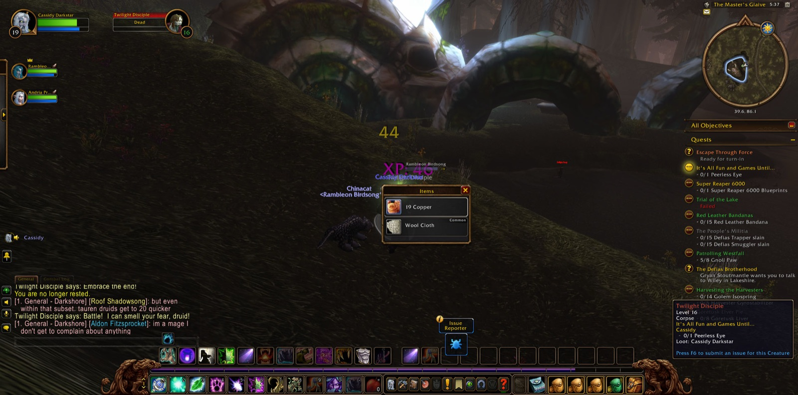
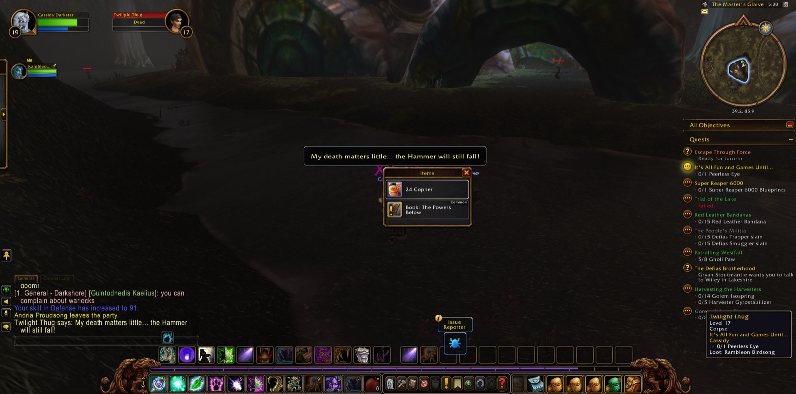
That task sent him far from home. He sailed once to Rut'theran Village and back, and then went west over The Veiled Sea until he reached Stormwind Harbor and Stormwind City, and he took a picture as he entered. There he took up "Speaking of Fortitude" and followed The Canals to the Dwarven District. In that district he finished "Elmore's Task" and took on "Underground Assault" and "Gyrodrillmatic Excavationators." He also accepted "Stormpike's Delivery," a package he must bring to Mountaineer Stormpike in Loch Modan. He left Stormwind with a book and a package to carry and the road to Ironforge still ahead of him.
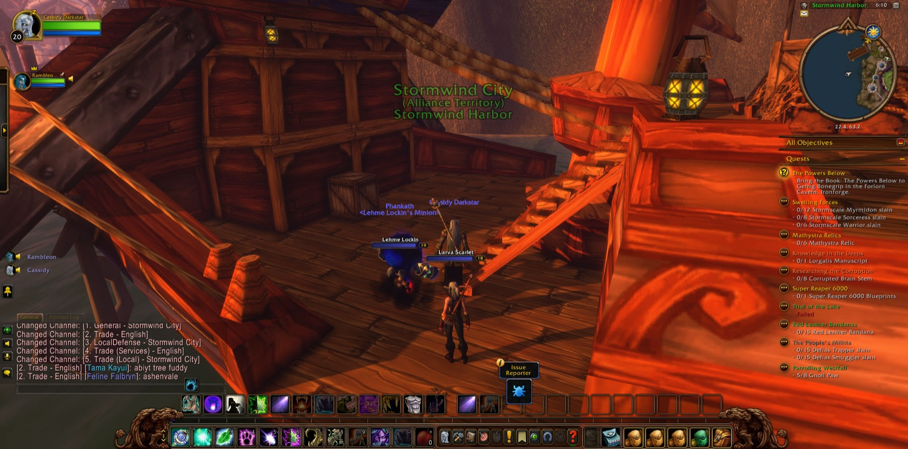
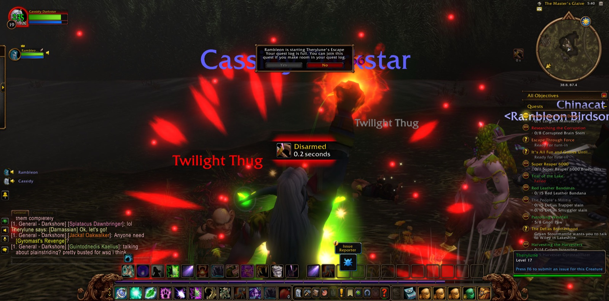
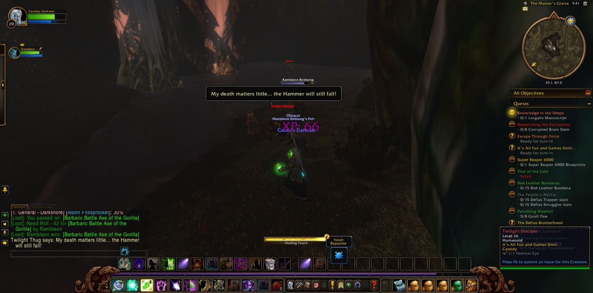
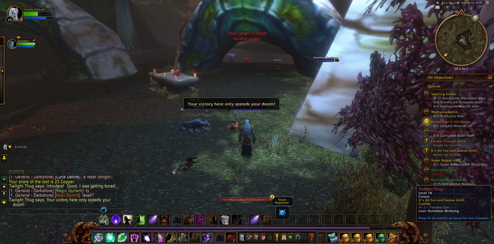
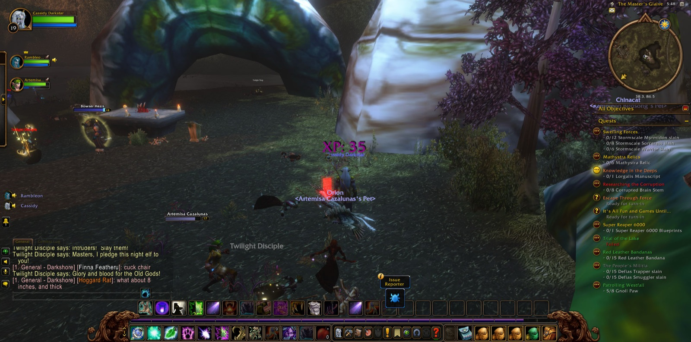